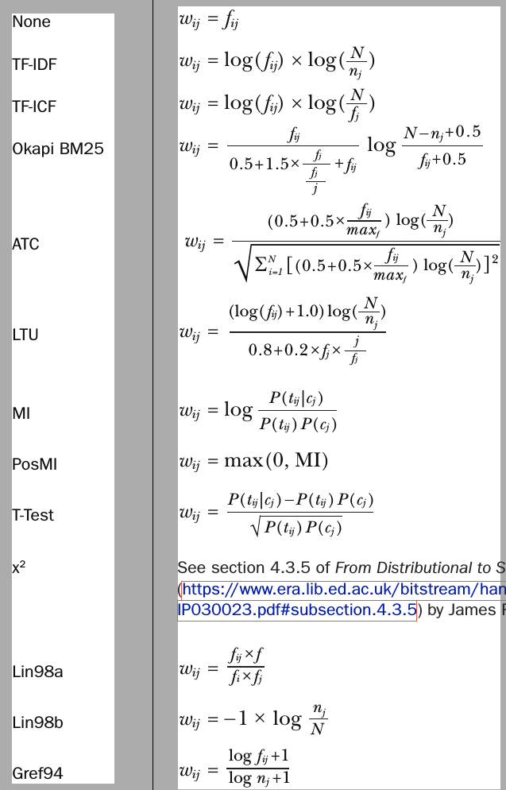

cnt_vectorizer = CountVectorizer(dtype=np.float32,
strip_accents='unicode', analyzer='word',token_pattern=r'\w{1,}',
ngram_range=(1, 3),min_df=3)
# we fit count vectorizer to get ngrams from both train and test data.
cnt_vectorizer.fit(list(train_df.cleaned_text.values) + list(test_df.cleaned_text.values))
xtrain_cntv = cnt_vectorizer.transform(train_df.cleaned_text.values)
xtest_cntv = cnt_vectorizer.transform(test_df.cleaned_text.values)
NOTE: You can build TF-IDF followed by search engine instead of ML models, and calculate cosine similarity between the quest and your documents using inverted index O(1) using Whoosh python library.
# Always start with these features. They work (almost) everytime!
tfv = TfidfVectorizer(dtype=np.float32, min_df=3, max_features=None,
strip_accents='unicode', analyzer='word',token_pattern=r'\w{1,}',
ngram_range=(1, 3), use_idf=1,smooth_idf=1,sublinear_tf=1,
stop_words = 'english')
# Fitting TF-IDF to both training and test sets (semi-supervised learning)
tfv.fit(list(train_df.cleaned_text.values) + list(test_df.cleaned_text.values))
xtrain_tfv = tfv.transform(train_df.cleaned_text.values)
xvalid_tfv = tfv.transform(test_df.cleaned_text.values)
# Always start with these features. They work (almost) everytime!
hv = HashingVectorizer(dtype=np.float32,
strip_accents='unicode', analyzer='word',
ngram_range=(1, 4),n_features=2**12,non_negative=True)
# Fitting Hash Vectorizer to both training and test sets (semi-supervised learning)
hv.fit(list(train_df.cleaned_text.values) + list(test_df.cleaned_text.values))
xtrain_hv = hv.transform(train_df.cleaned_text.values)
xvalid_hv = hv.transform(test_df.cleaned_text.values)
y_train = train_df.target.values
The idea here, is to gather all the words that have closer meaning together into a topic, to reduce the dimensionality and avoid overfitting and increase the generality of the models.
You can do this by appling PCA/TruncatedSVD/LDiA/LDA/NNMF after building TF-IDF / BoW.
Then feed this new data to the models.

def find_ngrams(input_list, n):
return zip(*[input_list[i:] for i in range(n)])
def semhash_tokenizer(text):
tokens = text.lower().split(" ")
final_tokens = []
for unhashed_token in tokens:
hashed_token = f"#{unhashed_token}#"
final_tokens += [''.join(gram) for gram in list(find_ngrams(list(hashed_token), 3))]
return final_tokens
# Use this one.
def semhash_corpus(sentence):
tokens = semhash_tokenizer(sentence)
return " ".join(map(str, tokens))